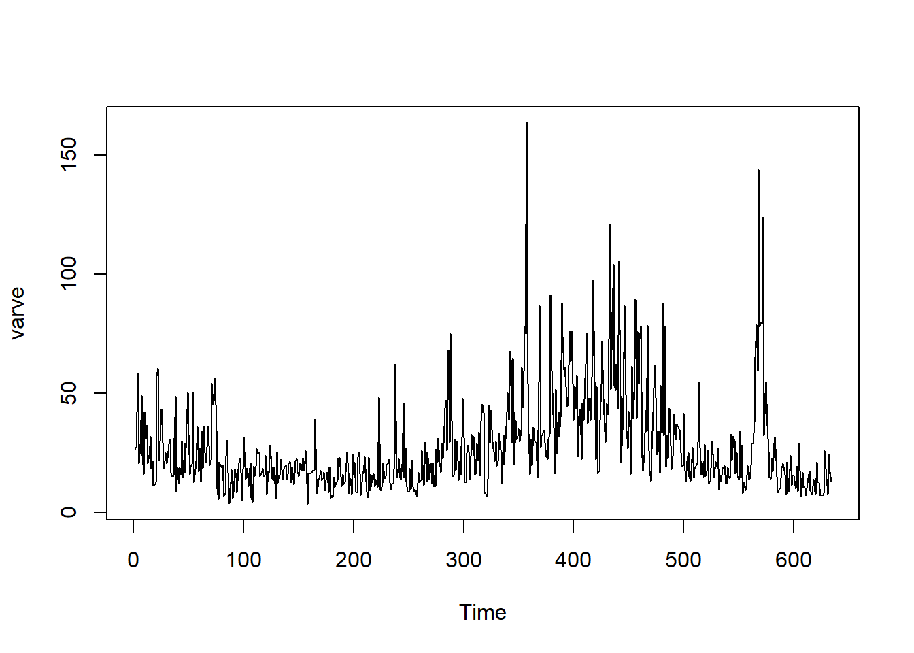
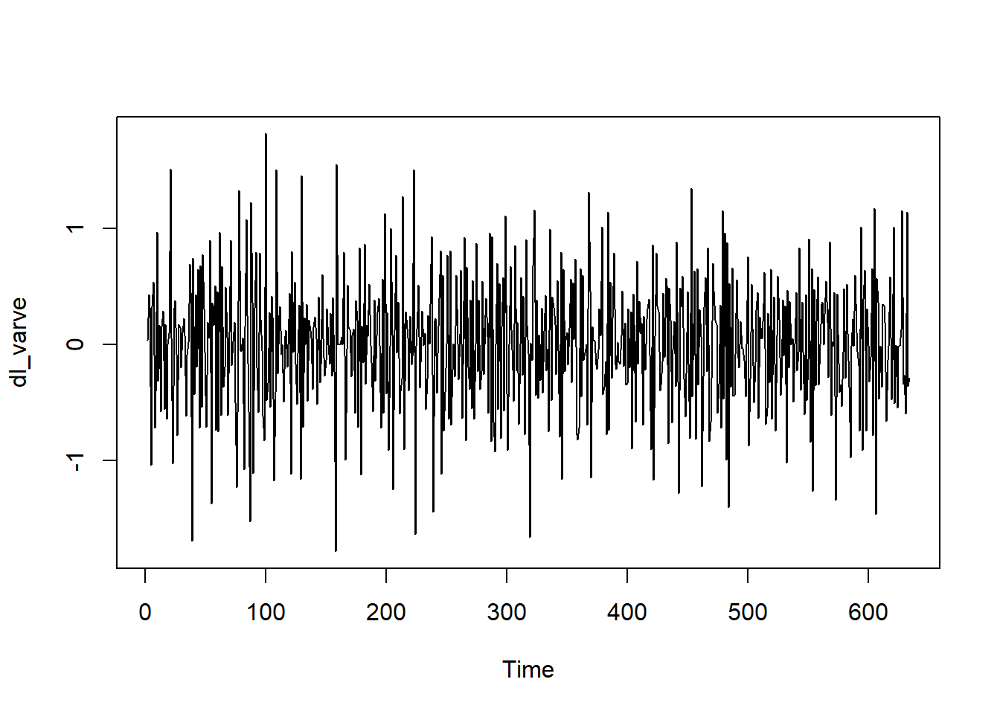
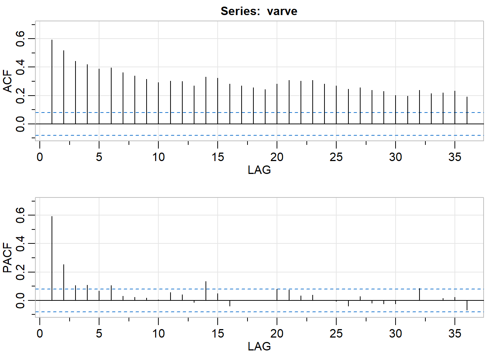
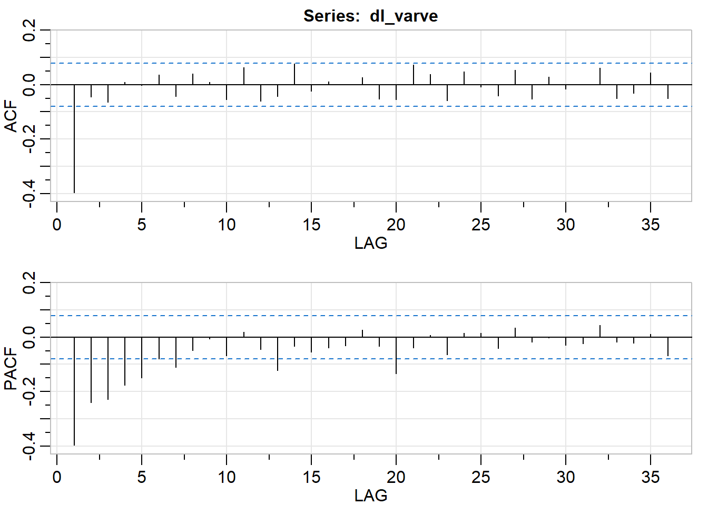
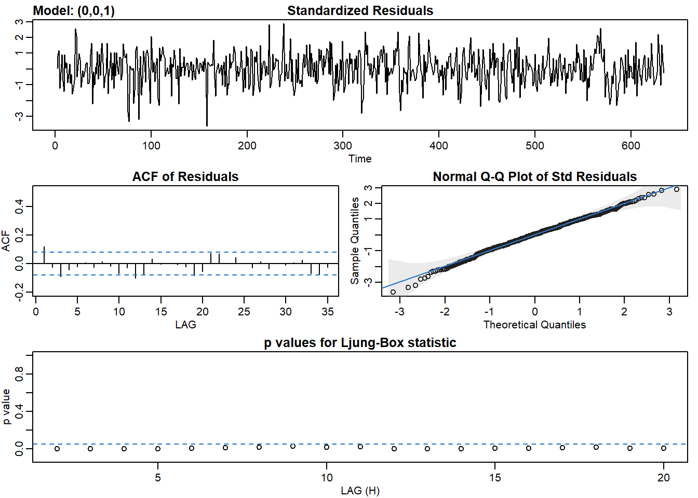
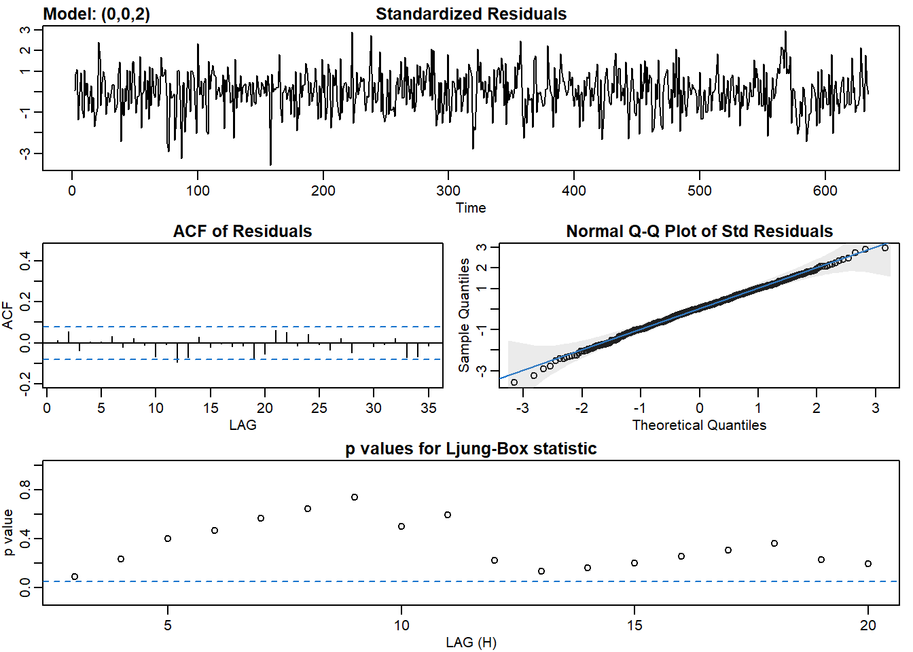
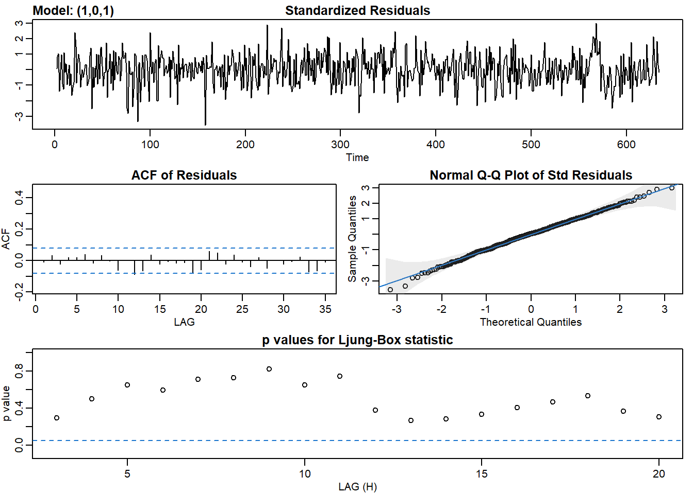

4 Chapter 2 Lab
4.1 Model choice and Residual analysis
AIC and BIC are great measures for fit of models:
\[ average(observed-predicted)^2+k(p+q)\] The smaller these measures are, the better the prediction.
sarima() fucntion returns 4 graphs. Given we want the model to predict most of the observed data, and the residuals are just white noise, these 4 tools can help us identify whether residuals are just white noise:
- Standardized residuals: does it look like white noise?
- Sample ACF of residuals: no statistically significant ACF (everything within the blue lines)
- Normal Q-Q plot: it should look like a line with a few outliers
- Q-statistic p-values: all p-values should be above the line
Finding the right model most of the time are through trials and errors starting with some ideas based off what we know about the data.
4.2 Data Example: Annual Varve Series
Sedimentary deposits from one location in Massachusetts for 634 years, beginning nearly 12,000 years ago. Loaded from library astsa
library(astsa)
ts.plot(varve)
dl_varve <- diff(log(varve))
ts.plot(dl_varve)
From the time series plot, it does not look like the data has a obvious linear trend, therefore first order differencing is most appropriate to tranform the data into a stationary process. It looks like it has a constant mean but moving average, suggesting MA(q) models might be appropriate. We will take a look at the ACF and PACF plots to further access:
acf2(varve)
## [,1] [,2] [,3] [,4] [,5] [,6] [,7] [,8] [,9] [,10] [,11] [,12] [,13] [,14]
## ACF 0.59 0.52 0.44 0.42 0.39 0.40 0.36 0.34 0.32 0.29 0.30 0.30 0.27 0.33
## PACF 0.59 0.25 0.11 0.11 0.07 0.11 0.03 0.02 0.02 0.01 0.06 0.04 -0.01 0.14
## [,15] [,16] [,17] [,18] [,19] [,20] [,21] [,22] [,23] [,24] [,25] [,26]
## ACF 0.32 0.28 0.27 0.26 0.24 0.28 0.31 0.30 0.31 0.28 0.27 0.25
## PACF 0.05 -0.04 0.00 0.00 0.00 0.08 0.08 0.03 0.04 0.00 0.00 -0.04
## [,27] [,28] [,29] [,30] [,31] [,32] [,33] [,34] [,35] [,36]
## ACF 0.26 0.24 0.23 0.20 0.2 0.24 0.21 0.22 0.23 0.19
## PACF 0.03 -0.02 -0.02 -0.02 0.0 0.09 0.00 0.02 0.02 -0.07The correlograms on the time plot of varve did not tell us a great deal here, which is expected. Now we will look at the ACF and PACF of the first order difference series:
acf2(dl_varve)
## [,1] [,2] [,3] [,4] [,5] [,6] [,7] [,8] [,9] [,10] [,11] [,12]
## ACF -0.4 -0.04 -0.06 0.01 0.00 0.04 -0.04 0.04 0.01 -0.05 0.06 -0.06
## PACF -0.4 -0.24 -0.23 -0.18 -0.15 -0.08 -0.11 -0.05 -0.01 -0.07 0.02 -0.05
## [,13] [,14] [,15] [,16] [,17] [,18] [,19] [,20] [,21] [,22] [,23] [,24]
## ACF -0.04 0.08 -0.02 0.01 0.00 0.03 -0.05 -0.06 0.07 0.04 -0.06 0.05
## PACF -0.12 -0.03 -0.05 -0.04 -0.03 0.03 -0.03 -0.13 -0.04 0.01 -0.06 0.01
## [,25] [,26] [,27] [,28] [,29] [,30] [,31] [,32] [,33] [,34] [,35] [,36]
## ACF -0.01 -0.04 0.05 -0.05 0.03 -0.02 0.00 0.06 -0.05 -0.03 0.04 -0.05
## PACF 0.02 -0.04 0.03 -0.02 0.00 -0.03 -0.02 0.04 -0.02 -0.02 0.01 -0.07Based on ACF, MA(1) model might be appropriate. Based on PACF, AR(5) might be appropriate, however, I would start with smallest value of p for simplicity of the model
# Fit an MA(1) to dl_varve.
sarima(dl_varve, p = 0, d = 0, q = 1)## initial value -0.551780
## iter 2 value -0.671633
## iter 3 value -0.706234
## iter 4 value -0.707586
## iter 5 value -0.718543
## iter 6 value -0.719692
## iter 7 value -0.721967
## iter 8 value -0.722970
## iter 9 value -0.723231
## iter 10 value -0.723247
## iter 11 value -0.723248
## iter 12 value -0.723248
## iter 12 value -0.723248
## iter 12 value -0.723248
## final value -0.723248
## converged
## initial value -0.722762
## iter 2 value -0.722764
## iter 3 value -0.722764
## iter 4 value -0.722765
## iter 4 value -0.722765
## iter 4 value -0.722765
## final value -0.722765
## converged
## $fit
##
## Call:
## stats::arima(x = xdata, order = c(p, d, q), seasonal = list(order = c(P, D,
## Q), period = S), xreg = xmean, include.mean = FALSE, transform.pars = trans,
## fixed = fixed, optim.control = list(trace = trc, REPORT = 1, reltol = tol))
##
## Coefficients:
## ma1 xmean
## -0.7710 -0.0013
## s.e. 0.0341 0.0044
##
## sigma^2 estimated as 0.2353: log likelihood = -440.68, aic = 887.36
##
## $degrees_of_freedom
## [1] 631
##
## $ttable
## Estimate SE t.value p.value
## ma1 -0.7710 0.0341 -22.6002 0.0000
## xmean -0.0013 0.0044 -0.2818 0.7782
##
## $AIC
## [1] 1.401826
##
## $AICc
## [1] 1.401856
##
## $BIC
## [1] 1.422918model_ma1 <- arima(dl_varve, order = c(0,0,1))
AIC(model_ma1)## [1] 887.3557BIC(model_ma1)## [1] 900.7071# Fit an MA(2) to dl_varve. Improvement?
sarima(dl_varve, p = 0, d = 0, q = 2)## initial value -0.551780
## iter 2 value -0.679736
## iter 3 value -0.728605
## iter 4 value -0.734640
## iter 5 value -0.735449
## iter 6 value -0.735979
## iter 7 value -0.736015
## iter 8 value -0.736059
## iter 9 value -0.736060
## iter 10 value -0.736060
## iter 11 value -0.736061
## iter 12 value -0.736061
## iter 12 value -0.736061
## iter 12 value -0.736061
## final value -0.736061
## converged
## initial value -0.735372
## iter 2 value -0.735378
## iter 3 value -0.735379
## iter 4 value -0.735379
## iter 4 value -0.735379
## iter 4 value -0.735379
## final value -0.735379
## converged
## $fit
##
## Call:
## stats::arima(x = xdata, order = c(p, d, q), seasonal = list(order = c(P, D,
## Q), period = S), xreg = xmean, include.mean = FALSE, transform.pars = trans,
## fixed = fixed, optim.control = list(trace = trc, REPORT = 1, reltol = tol))
##
## Coefficients:
## ma1 ma2 xmean
## -0.6710 -0.1595 -0.0013
## s.e. 0.0375 0.0392 0.0033
##
## sigma^2 estimated as 0.2294: log likelihood = -432.69, aic = 873.39
##
## $degrees_of_freedom
## [1] 630
##
## $ttable
## Estimate SE t.value p.value
## ma1 -0.6710 0.0375 -17.9057 0.0000
## ma2 -0.1595 0.0392 -4.0667 0.0001
## xmean -0.0013 0.0033 -0.4007 0.6888
##
## $AIC
## [1] 1.379757
##
## $AICc
## [1] 1.379817
##
## $BIC
## [1] 1.40788model_ma2 <- arima(dl_varve, order = c(0,0,2))
AIC(model_ma2)## [1] 873.3861BIC(model_ma2)## [1] 891.188# Fit an ARMA(1,1) to dl_varve. Improvement?
sarima(dl_varve, p = 1, d = 0, q = 1)## initial value -0.550994
## iter 2 value -0.648962
## iter 3 value -0.676965
## iter 4 value -0.699167
## iter 5 value -0.724554
## iter 6 value -0.726719
## iter 7 value -0.729066
## iter 8 value -0.731976
## iter 9 value -0.734235
## iter 10 value -0.735969
## iter 11 value -0.736410
## iter 12 value -0.737045
## iter 13 value -0.737600
## iter 14 value -0.737641
## iter 15 value -0.737643
## iter 16 value -0.737643
## iter 17 value -0.737643
## iter 18 value -0.737643
## iter 18 value -0.737643
## iter 18 value -0.737643
## final value -0.737643
## converged
## initial value -0.737522
## iter 2 value -0.737527
## iter 3 value -0.737528
## iter 4 value -0.737529
## iter 5 value -0.737530
## iter 5 value -0.737530
## iter 5 value -0.737530
## final value -0.737530
## converged
## $fit
##
## Call:
## stats::arima(x = xdata, order = c(p, d, q), seasonal = list(order = c(P, D,
## Q), period = S), xreg = xmean, include.mean = FALSE, transform.pars = trans,
## fixed = fixed, optim.control = list(trace = trc, REPORT = 1, reltol = tol))
##
## Coefficients:
## ar1 ma1 xmean
## 0.2341 -0.8871 -0.0013
## s.e. 0.0518 0.0292 0.0028
##
## sigma^2 estimated as 0.2284: log likelihood = -431.33, aic = 870.66
##
## $degrees_of_freedom
## [1] 630
##
## $ttable
## Estimate SE t.value p.value
## ar1 0.2341 0.0518 4.5184 0.0000
## ma1 -0.8871 0.0292 -30.4107 0.0000
## xmean -0.0013 0.0028 -0.4618 0.6444
##
## $AIC
## [1] 1.375456
##
## $AICc
## [1] 1.375517
##
## $BIC
## [1] 1.403579model_arma11 <- arima(dl_varve, order = c(1,0,1))
AIC(model_arma11)## [1] 870.6638BIC(model_arma11)## [1] 888.4657# Fit an ARMA(2,1) to dl_varve. Improvement?
sarima(dl_varve, p = 2, d = 0, q = 1)## initial value -0.550651
## iter 2 value -0.656533
## iter 3 value -0.691671
## iter 4 value -0.699615
## iter 5 value -0.714090
## iter 6 value -0.721637
## iter 7 value -0.724629
## iter 8 value -0.731357
## iter 9 value -0.733142
## iter 10 value -0.733786
## iter 11 value -0.734198
## iter 12 value -0.734623
## iter 13 value -0.735038
## iter 14 value -0.735325
## iter 15 value -0.735348
## iter 16 value -0.735350
## iter 17 value -0.735350
## iter 17 value -0.735350
## iter 17 value -0.735350
## final value -0.735350
## converged
## initial value -0.737984
## iter 2 value -0.738073
## iter 3 value -0.738128
## iter 4 value -0.738306
## iter 5 value -0.738336
## iter 6 value -0.738337
## iter 6 value -0.738337
## iter 6 value -0.738337
## final value -0.738337
## converged## $fit
##
## Call:
## stats::arima(x = xdata, order = c(p, d, q), seasonal = list(order = c(P, D,
## Q), period = S), xreg = xmean, include.mean = FALSE, transform.pars = trans,
## fixed = fixed, optim.control = list(trace = trc, REPORT = 1, reltol = tol))
##
## Coefficients:
## ar1 ar2 ma1 xmean
## 0.2447 0.0483 -0.9055 -0.0013
## s.e. 0.0501 0.0473 0.0298 0.0026
##
## sigma^2 estimated as 0.228: log likelihood = -430.82, aic = 871.64
##
## $degrees_of_freedom
## [1] 629
##
## $ttable
## Estimate SE t.value p.value
## ar1 0.2447 0.0501 4.8837 0.0000
## ar2 0.0483 0.0473 1.0192 0.3085
## ma1 -0.9055 0.0298 -30.3958 0.0000
## xmean -0.0013 0.0026 -0.5044 0.6141
##
## $AIC
## [1] 1.377002
##
## $AICc
## [1] 1.377102
##
## $BIC
## [1] 1.412156model_arma21 <- arima(dl_varve, order = c(2,0,1))
AIC(model_arma21)## [1] 871.6421BIC(model_arma21)## [1] 893.8945Here we tried fitting ARIMA(0,0,1), ARIMA(0,0,2), ARIMA(1,0,1), and ARIMA(2,0,1), which are MA(1), MA(2), ARMA(1,1), and ARMA(2,1), respectively. ARMA(1,1) and ARMA(2,1) are better options than MA(1) and MA(2) based on the AIC and BIC and other statistics tell that the residuals resemble more of white noise.